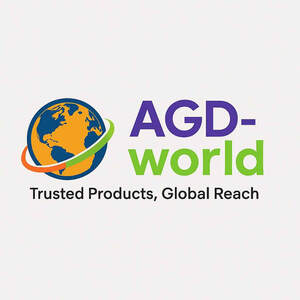

Trade Mark Journal No.2025/041 10 October 2025
UK00004266136 18 September 2025 (16,21)

- Class 16
- Paper and cardboard; printed matter; bookbinding material; photographs; stationery and office requisites, except furniture; adhesives for stationery or household purposes; drawing materials and materials for artists; paintbrushes; instructional and teaching materials; plastic sheets, films and bags for wrapping and packaging; printers' type, printing blocks; bags and articles for packaging, wrapping and storage; food wrappers; food-wrapping paper; food wrapping plastic film; bags of paper for foodstuffs; food bags of paper or plastics; food bag tape for freezer use; food wrapping plastic film for household use; plastic food storage bags for household use; food waste bags of paper for household use; food waste bags of biodegradable plastic for household use; biodegradable paper pulp-based to-go containers for food; parts and fittings for all the aforesaid goods.
- Class 21
- Household or kitchen utensils and containers; cookware and tableware, except forks, knives and spoons; combs and sponges; brushes, except paintbrushes; brush-making materials; articles for cleaning purposes; unworked or semi-worked glass, except building glass; glassware, porcelain and earthenware; tableware, cookware and containers; glasses, drinking vessels and barware; bottles; biobased bottles; biodegradable bottles; water bottles; drinking bottles; reusable bottles; glass bottles; bottles, sold empty; aluminum water bottles; sports bottles [empty]; insulated bottles [flasks]; water bottles for bicycles; water bottles sold empty; sports bottles sold empty; drinking bottles for sports; reusable plastic bottles sold empty; empty water bottles for bicycles; reusable stainless steel water bottles; reusable plastic water bottles sold empty; reusable stainless steel water bottles sold empty; reusable silicone food covers; food storage containers; parts and fittings for all the aforesaid goods.
Gilda Pourbahram
Representative: Stobbs